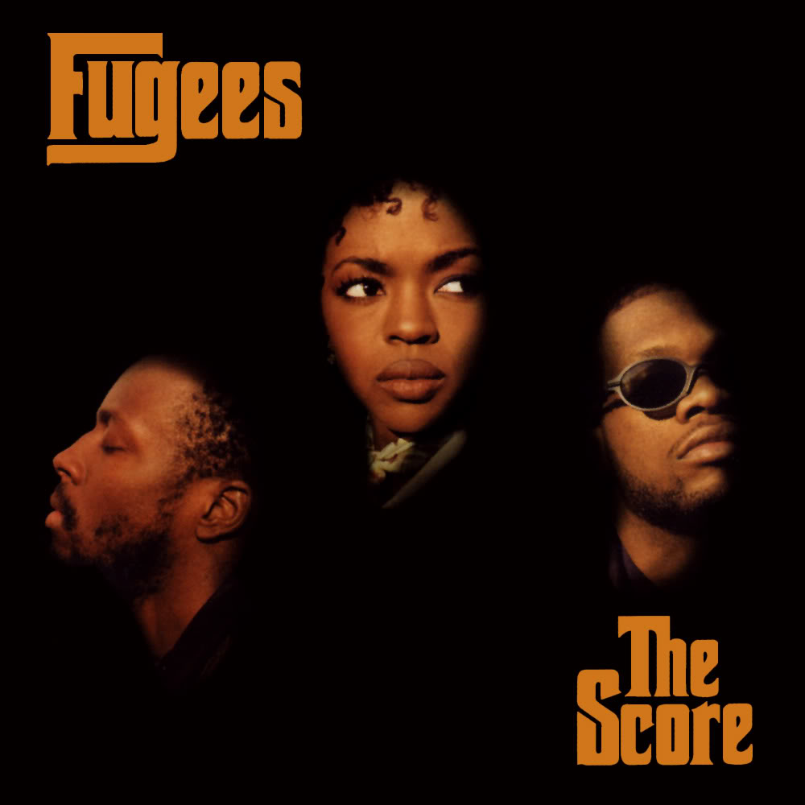
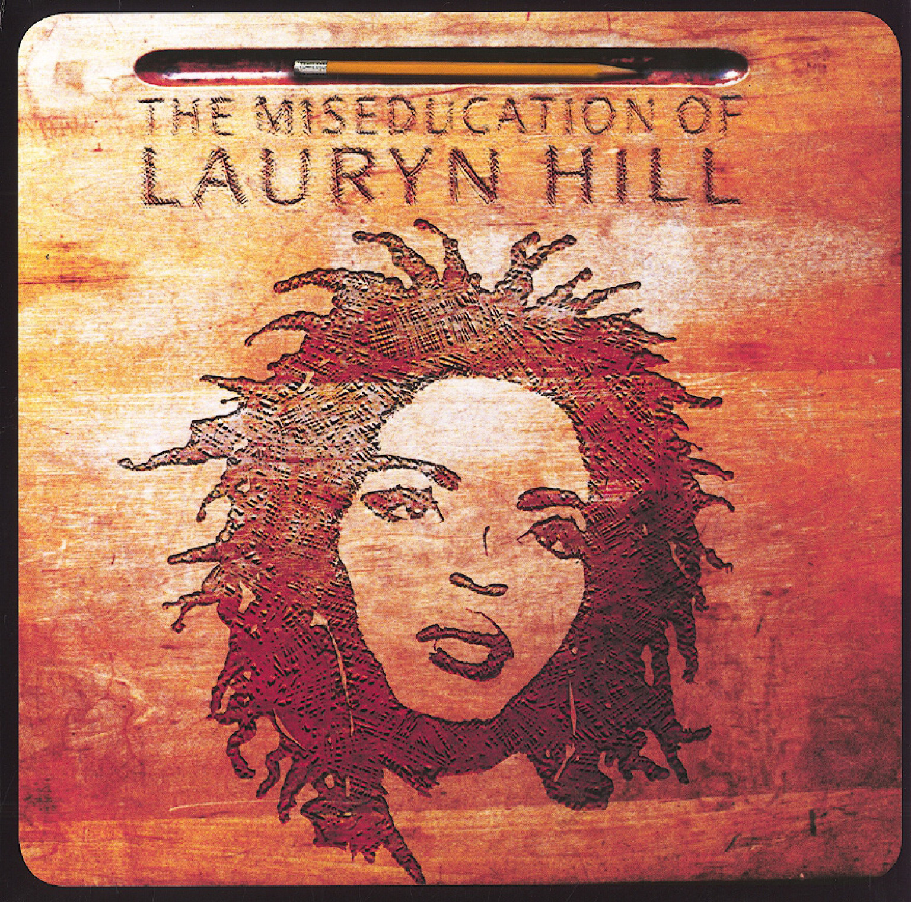

Often regarded as one of the greatest rappers of all time, as well as
being a pioneer in the Neo soul genre, Hill is widely credited for
breaking barriers for female rappers, popularizing melodic rapping and
for bringing hip hop to popular music. She is known for being a member
of Fugees and her solo album The Miseducation of Lauryn Hill, which won
many awards, and became one of the best-selling albums of all-time. Hill
has influenced many artists of various genres.
Biography of Lauryn Hill's life
1975
Lauryn Noelle Hill was born in East Orange, New Jersey, on May 26,
1975, to Valerie, a teacher, and Mal, a computer consultant.
1991
Hill began her acting carrer appearing in the soap opera
As the World Turns in a recurring role as troubled
teenager Kira Johnson and MC Lyte's Off-Broadway hip-hop rendering
of Shakespeare's Twelfth Night
1993
Hill co-starred alongside Whoopi Goldberg in the 1993 release
Act 2: Back in the Habit , playing Rita Louise
Watson.
1994
The Fugees, who signed a contract with Columbia/Ruffhouse Records
in 1993, became known for their genre blending, particularly of
reggae, rock and soul, which was first experimented on their debut
album, Blunted on Reality, released in 1994.
Released February 1, 1994,
Blunted on Reality received mixed to favorable
reviews, unable to cement the Fugees peremenace in the hip-hop
space.
1996
Hill and the Fugees dropped their second studio album,
The Score.

Released February 13, 1996, The Score, peaked at
number one on the U.S. Billboard 200 and stayed in the top ten
of that chart for over half a year. The Score came
second in the list of best albums and three of its tracks placed
within the top twenty best singles. It won the 1996 Grammy Award
for Best Rap Album.
1997
In 1997, the Fugees split to work on solo projects. Hill became
pregnant in late 1996, and on August 3, 1997, Hill's first child,
Zion David, was born.
1998
Hill's first solo effort, The Miseducation of Lauryn Hill,
established her as a headline talent in her own right.

Released August 25, 1998,
The Miseducation of Lauryn Hillis a neo soul and
R&B album with some songs based in hip hop soul and reggae. Its
lyrics touch upon Hill's pregnancy and the turmoil within her
former group the Fugees, along with themes of love and God. The
album's title was inspired by the film and autobiographical
novel Education of Sonny Carson, and Carter G.
Woodson's Mis-Education of the Negro.